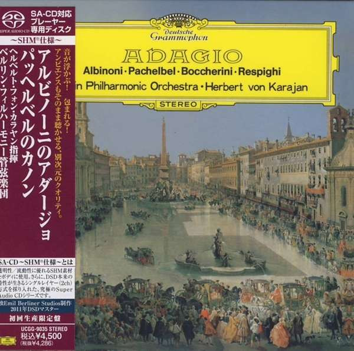

SACD
Adagio
Tomaso Albinoni · Johann Pachelbel · Luigi Boccherini · Ottorino Respighi - Berliner Philharmoniker · Herbert von Karajan
Media: NM · Sleeve: NM
CA$65.00
Discogs SuggestedCA$245.06
Discogs MedianCA$245.06
Discogs HighCA$245.06
- Physical Copy ID
- BB-SACD-201
- Year
- 2011
- Label
- Deutsche Grammophon, Deutsche Grammophon
- Catalog #
- UCGG-9035, 2530 247
- Country
- JPJapan
- Genre / Style
- Classical · Baroque, Classical, Romantic